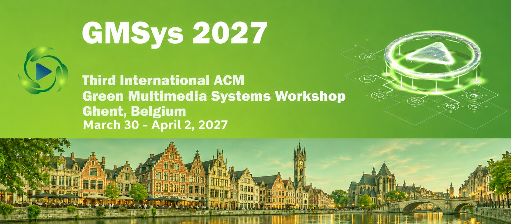
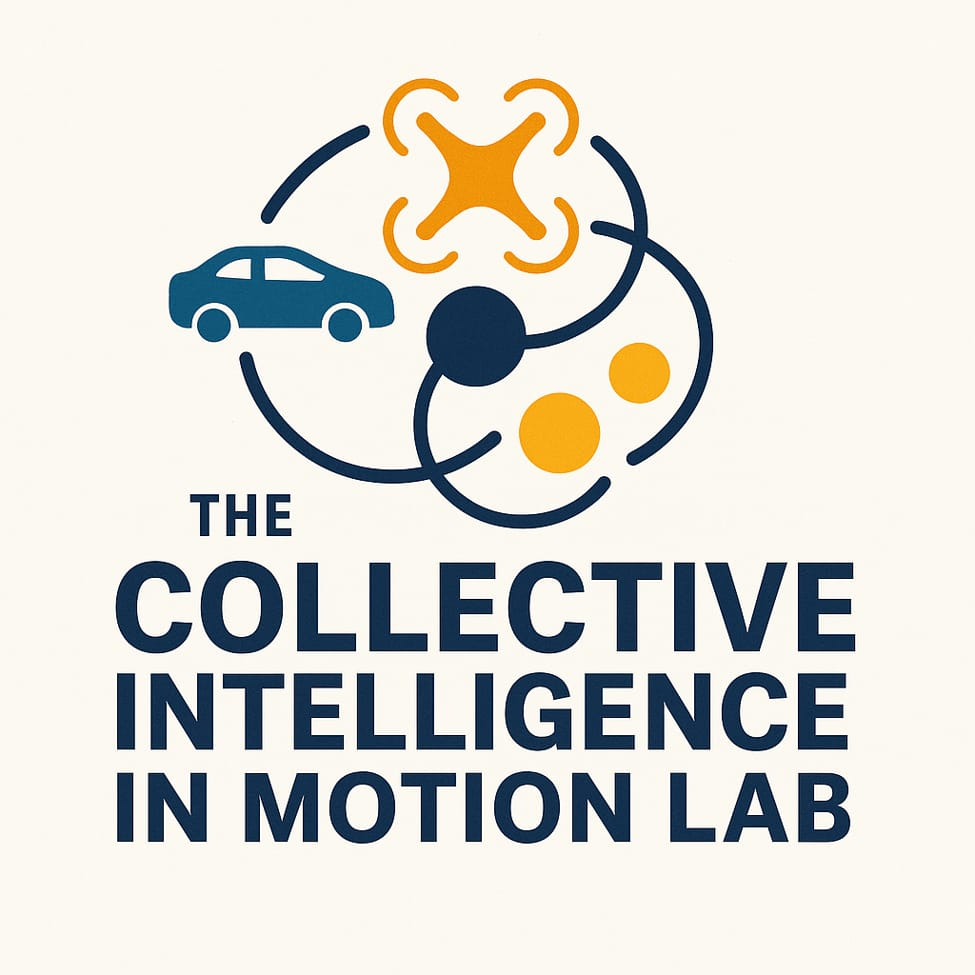
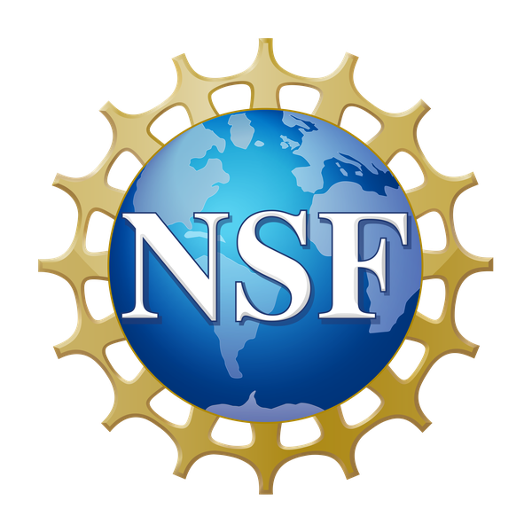

GMSys 2027: Third International ACM Green Multimedia Systems Workshop

Call For Submissions
GMSys 2027 invites contributions on the design, implementation, measurement, and evaluation of energy-efficient and environmentally sustainable multimedia systems. We welcome research papers, position papers, and industry experience reports addressing energy consumption and environmental impact across content capture and generation, processing, storage, delivery, and consumption.
The workshop covers multimedia applications ranging from entertainment to healthcare, drone-based monitoring and rescue, autonomous vehicles, wearable devices, and immersive AR/VR applications, with particular attention to operating under battery, computing, or communication constraints. We invite contributions targeting energy efficiency in emerging multimedia technologies, particularly computationally intensive AI models, multimodal video intelligence, and automated video processing.
Papers on measurement methods, open tools, datasets, and negative results are welcome when they offer useful lessons for the community.
Call for Contributions
Topics of interest include, but are not limited to:
- Content production and processing
- Energy-efficient content capture, encoding, transcoding, and multimedia production workflows
- Energy-efficient media storage, archiving, and content lifecycle management
- Energy-efficient neural video compression and generative AI for video
- Energy-efficient video and feature coding for human viewing and machine vision
- Energy-efficient multimodal video understanding and automated video analysis
- CO2-aware Multimodal Large Language Models inference allocation across collaborative computing infrastructure
- Energy-efficient construction and processing of neural 3D representations, including NeRF and Gaussian splatting
- Delivery and networking
- Energy-aware adaptive streaming and transport mechanisms for low-latency, live, and interactive multimedia
- Energy-efficient caching, content distribution, and CDN operation
- Energy-efficient wireless, mobile, and multipath multimedia delivery
- Semantic video communication and neural joint source-channel coding under energy constraints
- Energy-efficient streaming of immersive and volumetric media, including Gaussian splats and neural scene representations
- Joint optimization of processing and communication energy in distributed multimedia systems
- Consumption and quality of experience
- Energy-efficient decoding, rendering, and display, including immersive media and neural 3D representations
- Display- and device-aware energy optimization for encoding and playback
- Energy-efficient multimedia playback on mobile and resource-constrained devices
- Energy and quality tradeoffs in AI-based video reconstruction, super-resolution, and enhancement
- Perceptual quality, QoE, and user acceptance of energy-saving service options
- Measurement and environmental assessment
- Reproducible energy and carbon benchmarks, datasets, measurement tools, and models
- End-to-end energy and carbon assessment across multimedia systems and hardware platforms
- Energy assessment of training and inference for multimedia AI models
- Joint evaluation of energy, bitrate, perceptual quality, latency, reliability, machine-task accuracy, and battery operating time
- Lifecycle assessment, embodied impacts, and operational emissions in multimedia systems
- Energy costs of multimedia security, privacy, and content authenticity mechanisms
- Privacy-preserving analysis of telemetry data from streaming services, focusing on energy consumption and quality of experience
- Regulatory requirements and compliance-aware orchestration of distributed multimedia, its data transfers, migration, and access control
- Energy-efficient multimedia applications
- Energy-efficient multimedia for monitoring and inspection in energy systems, industry, transportation, and environmental applications
- Energy-efficient multimedia for disaster monitoring, search and rescue, and emergency response
- Energy-efficient video sensing and communication using drones, wearable devices, and battery-powered cameras
- Energy-efficient cloud gaming, multiview streaming, and live media production
- Energy-aware multimedia operation and integration with energy systems
- Renewable-aware multimedia streaming, with local electricity generation and battery storage
- Battery- and mobility-aware multimedia streaming for electric vehicles’ passengers, including battery-aware adaptation and route-aware caching
- Renewable- and electricity-price-aware execution of compute-intensive AI-based multimedia services across compute infrastructure
- Forecasting and digital twins for coordinated optimization of multimedia workloads and electricity-production resources
Submission Guideline
We accept the following types of submissions:
- Full research papers up to 6 pages, including references
- Short / industry position papers up to 3 pages, including references
- Extended abstracts up to 2 pages, including references
Important Dates
| Milestone | Date |
|---|---|
| Workshop paper submission | January 11, 2027 |
| Paper acceptance notification | February 1, 2027 |
| Camera-ready submission | February 19, 2027 |
| Workshop date | April 2, 2027 |
Organizers and Committees
Workshop Organizers
- Samira Afzal, Texas A&M University-Corpus Christi, USA
- Narges Mehran, Salzburg Research, Austria
- Andrew C. Freeman, Baylor University, USA
- Farzad Tashtarian, Alpen-Adria-Universität Klagenfurt, Austria
- Mehdi Sookhak, Texas A&M University-Corpus Christi, USA
Steering Committee
- Mehdi Sookhak, Texas A&M University-Corpus Christi, USA
- Christian Timmerer, Alpen-Adria-Universität Klagenfurt, Austria
- Frank Pallas, University of Salzburg, Austria
Technical Sponsors

